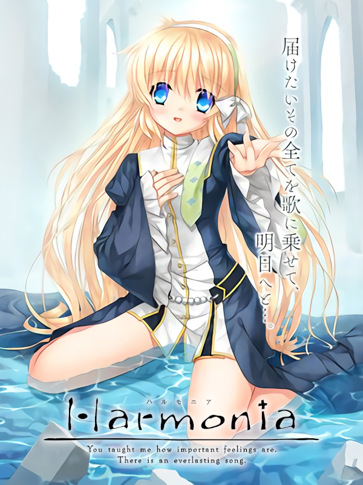

Harmonia
Harmonia
Details
|  | |
| Playtime | Not Played |
| Last Activity | Never |
| Added | 12/30/2023 6:40:47 |
| Modified | 12/30/2023 6:54:02 |
| Completion Status | Not Played |
| Library | Steam |
| Source | Steam |
| Platform | PC (Windows) |
| Release Date | 9/22/2016 |
| Community Score | 80 |
| Critic Score | 60 |
| User Score | |
| Genre | Adventure Visual Novel |
| Developer | Key |
| Publisher | Key PROTOTYPE Visual Arts |
| Feature | Single Player |
| Links | Steam Twitch |
| Tag | |
Description
Love is the one thing that will never hurt anyone.
An immense war left the world broken and torn.
Ashes covered the sky, the land was stripped of vegetation, and water dried up.
As a result, the human population drastically decreased.
The remaining humans huddled together to survive.
During this time, an emotions-capable robot known as a Phiroid woke up in a decayed factory.
Prior to the war, science created these human-like robots capable of feeling emotion.
As new partners for the humans, the Phiroids promised better lives for all of humanity.
However, upon waking, this Phiroid soon realized that its emotions were not functioning.
Its right hand lacked artificial skin and the mechanical parts showed how its production likely went unfinished.
This young male Phiroid had an innate desire to be with humans.
And so it began a journey to obtain its lost emotions, and wandered across this devastated world.
One day, the Phiroid was discovered by a young girl.
Thinking he was a human, she began to look after him.
She brought him to a small, but pleasant town.
While living with the young girl, the Phiroid slowly learned about emotions.
What is Kinetic Novel?
A new form of entertainment for the sole purpose of storytelling -- not a novel, not an anime, not a game -- Kinetic Novel.
Made with the goal of providing the reader with an unprecedented sense of presence and empathy for the characters through the use of a high-quality scenario, graphics, music, and other production values.
This young boy awoke to find himself in the remains of what seemed to be a factory.
His right hand lacks artificial skin as he had been abandoned mid-production. A glove always covers the exposed machinery.
He wandered the ravaged landscape, following an innate desire to be with another human. Until one day, he was found by a young girl named Shiona.
Shiona gave him the name Rei.
“The Girl who Sings her Feelings” Shiona（CV：Kaori Mizuhashi）
Shiona is the young girl who discovered Rei. She lives in a church located in one of the makeshift towns of this devastated world.
Next to nothing can erase the smile from her face, and she is often found consoling others.
She frequently refers to the feelings and emotions of people in terms of shapes and colors, which can be difficult to understand.
She loves to sing and often performs in the church or the town square.
“The Blue Little Lady from the Library” Tipi（CV：Misaki Kuno）
This young girl lives in the town's library. For some reason, she is often found crying.
In age of digital books, this strange place for storing physical copies still exists.
Shiona calls her the “blue girl”.
Although the townsfolk know about her, few venture anywhere near.
Scenario : Tsuzuru Nakamura / Kai
Music : Shinji Orito / Ryo Mizutsuki
Theme Music : “Todoketai Melody”
Lyrics : Kai
Composition : Shinji Orito
Arrangement : Yuichiro Tsukagoshi (NanosizeMir)
Vocals : Ayaka Kitazawa
Insert Song : “Towa no Hoshi e”
Lyrics : Kai
Composition : Tomohiro Takeshita
Arrangement : Meeon
Vocals : Haruka Shimotsuki
＜STORY＞
This is a story of the distant future.An immense war left the world broken and torn.
Ashes covered the sky, the land was stripped of vegetation, and water dried up.
As a result, the human population drastically decreased.
The remaining humans huddled together to survive.
During this time, an emotions-capable robot known as a Phiroid woke up in a decayed factory.
Prior to the war, science created these human-like robots capable of feeling emotion.
As new partners for the humans, the Phiroids promised better lives for all of humanity.
However, upon waking, this Phiroid soon realized that its emotions were not functioning.
Its right hand lacked artificial skin and the mechanical parts showed how its production likely went unfinished.
This young male Phiroid had an innate desire to be with humans.
And so it began a journey to obtain its lost emotions, and wandered across this devastated world.
One day, the Phiroid was discovered by a young girl.
Thinking he was a human, she began to look after him.
She brought him to a small, but pleasant town.
While living with the young girl, the Phiroid slowly learned about emotions.
What is Kinetic Novel?
A new form of entertainment for the sole purpose of storytelling -- not a novel, not an anime, not a game -- Kinetic Novel.
Made with the goal of providing the reader with an unprecedented sense of presence and empathy for the characters through the use of a high-quality scenario, graphics, music, and other production values.
＜CHARACTER＞
“The Emotionless Mechanical Boy” ReiThis young boy awoke to find himself in the remains of what seemed to be a factory.
His right hand lacks artificial skin as he had been abandoned mid-production. A glove always covers the exposed machinery.
He wandered the ravaged landscape, following an innate desire to be with another human. Until one day, he was found by a young girl named Shiona.
Shiona gave him the name Rei.
“The Girl who Sings her Feelings” Shiona（CV：Kaori Mizuhashi）
Shiona is the young girl who discovered Rei. She lives in a church located in one of the makeshift towns of this devastated world.
Next to nothing can erase the smile from her face, and she is often found consoling others.
She frequently refers to the feelings and emotions of people in terms of shapes and colors, which can be difficult to understand.
She loves to sing and often performs in the church or the town square.
“The Blue Little Lady from the Library” Tipi（CV：Misaki Kuno）
This young girl lives in the town's library. For some reason, she is often found crying.
In age of digital books, this strange place for storing physical copies still exists.
Shiona calls her the “blue girl”.
Although the townsfolk know about her, few venture anywhere near.
＜STAFF＞
Character Design & Original Art : Itaru Hinoue.Scenario : Tsuzuru Nakamura / Kai
Music : Shinji Orito / Ryo Mizutsuki
Theme Music : “Todoketai Melody”
Lyrics : Kai
Composition : Shinji Orito
Arrangement : Yuichiro Tsukagoshi (NanosizeMir)
Vocals : Ayaka Kitazawa
Insert Song : “Towa no Hoshi e”
Lyrics : Kai
Composition : Tomohiro Takeshita
Arrangement : Meeon
Vocals : Haruka Shimotsuki